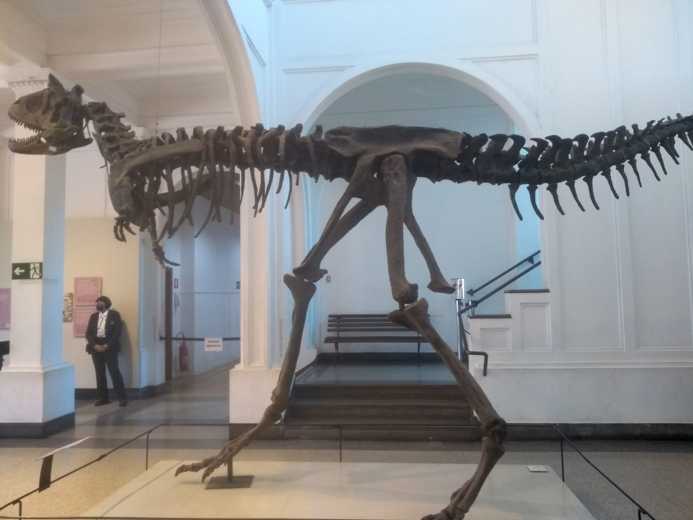
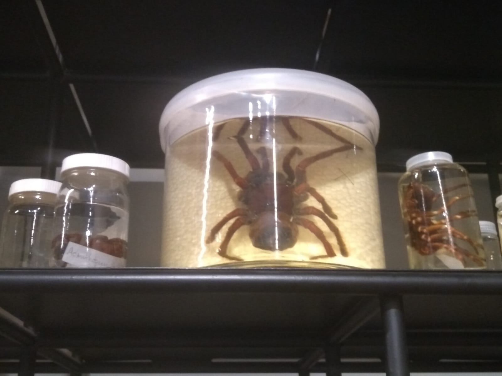

-

- 
Minha primeira viagem a são paulo sem a presença de meus pais, então foi algo um pouco marcante, é divertido, porém tive grandes dificuldades e até me perdi em são paulo.
As fotos 2 e 3 mostram minha viagem a um museu incrível perto do parque ipiranga, onde estava tendo reformas, lá dentro era incrível, tudo era mágico e mostrava a beleza de algo construído para a história.
Porém a primeira é uma forma de punição onde fiquei 3 dias trabalhando, sabe é um inferno que eu odiava, mas 100 reais ao dia era bem tentador, então no final fiquei 3 dias nessa sala sofrendo.